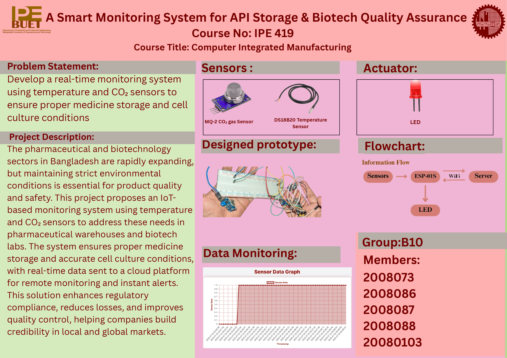

Develop a real-time monitoring system using temperature and CO₂ sensors to ensure proper medicine storage and optimal conditions for cell cultures in biotech labs.
| Device / Component | Quantity | Task / Function |
|---|---|---|
| DS18B20 Temperature Sensor | 1 | Measures temperature in storage/lab environments |
| MQ-135 Gas Sensor | 1 | Detects CO₂ and air quality in real time |
| ESP-01S Wi-Fi Module | 1 | Sends sensor data to cloud/web dashboard |
| Relay Module (1-Channel) | 1 | Controls fan or alarm in response to abnormal conditions |
| Buzzer / LED | 1 | Provides local audio/visual alert |
This system ensures medicine safety and optimal lab conditions, reduces manual monitoring, and supports regulatory compliance in pharmaceutical and biotech industries.

#include <ESP8266WiFi.h>
#include <ESP8266HTTPClient.h>
const char* ssid = "Mahmudur";
const char* password = "123123123";
const char* serverURL = "https://ipe20-buet.top/";
#define CO2_SENSOR_PIN 0 // GPIO0
#define LED_PIN 2 // GPIO2
bool lastStatus = false;
void setup() {
pinMode(CO2_SENSOR_PIN, INPUT);
pinMode(LED_PIN, OUTPUT);
digitalWrite(LED_PIN, LOW);
Serial.begin(9600);
WiFi.begin(ssid, password);
Serial.print("Connecting to WiFi");
while (WiFi.status() != WL_CONNECTED) {
delay(500);
Serial.print(".");
}
Serial.println("\nConnected to WiFi.");
}
void loop() {
bool co2High = digitalRead(CO2_SENSOR_PIN);
if (co2High) {
digitalWrite(LED_PIN, HIGH); // Turn on LED
if (!lastStatus) {
sendDataToServer("HIGH");
lastStatus = true;
}
} else {
digitalWrite(LED_PIN, LOW); // Turn off LED
if (lastStatus) {
sendDataToServer("NORMAL");
lastStatus = false;
}
}
delay(2000); // Wait 2 seconds
}
void sendDataToServer(String co2Status) {
if (WiFi.status() == WL_CONNECTED) {
HTTPClient http;
String url = String(serverURL) + "?status=" + co2Status;
http.begin(url);
int httpCode = http.GET();
if (httpCode > 0) {
Serial.println("Server Response: " + http.getString());
} else {
Serial.println("Error Sending Data");
}
http.end();
} else {
Serial.println("WiFi not connected.");
}
}
Temperature Sensor Code (ESP8266 + DS18B20):
#include <ESP8266WiFi.h>
#include <ESP8266HTTPClient.h>
#include <OneWire.h>
#include <DallasTemperature.h>
const char* ssid = "Mahmudur";
const char* password = "123123123";
const char* serverURL = "https://ipe20-buet.top";
#define ONE_WIRE_BUS 0 // GPIO0 for temp sensor
OneWire oneWire(ONE_WIRE_BUS);
DallasTemperature sensors(&oneWire);
#define LED_PIN 2 // GPIO2
float thresholdTemp = 20.0;
bool alarmOn = false;
void setup() {
Serial.begin(9600);
pinMode(LED_PIN, OUTPUT);
digitalWrite(LED_PIN, LOW);
sensors.begin();
WiFi.begin(ssid, password);
Serial.print("Connecting to WiFi");
while (WiFi.status() != WL_CONNECTED) {
delay(500);
Serial.print(".");
}
Serial.println("\nConnected to WiFi.");
}
void loop() {
sensors.requestTemperatures();
float tempC = sensors.getTempCByIndex(0);
Serial.print("Temperature: ");
Serial.print(tempC);
Serial.println("°C");
if (tempC > thresholdTemp) {
digitalWrite(LED_PIN, HIGH);
if (!alarmOn) {
sendToServer(tempC, "HIGH");
alarmOn = true;
}
} else {
digitalWrite(LED_PIN, LOW);
if (alarmOn) {
sendToServer(tempC, "NORMAL");
alarmOn = false;
}
}
delay(5000); // 5-second interval
}
void sendToServer(float temp, String status) {
if (WiFi.status() == WL_CONNECTED) {
HTTPClient http;
String url = String(serverURL) + "?temp=" + String(temp) + "&status=" + status;
http.begin(url);
int httpCode = http.GET();
if (httpCode > 0) {
Serial.println("Server Response: " + http.getString());
} else {
Serial.println("Failed to connect to server.");
}
http.end();
} else {
Serial.println("WiFi not connected.");
}
}